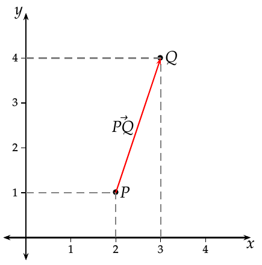
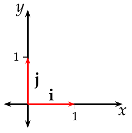
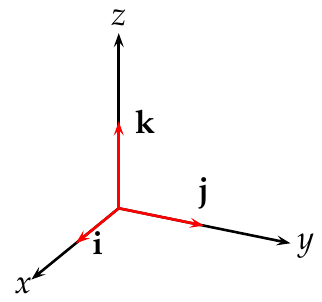
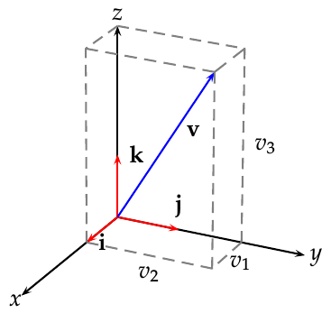
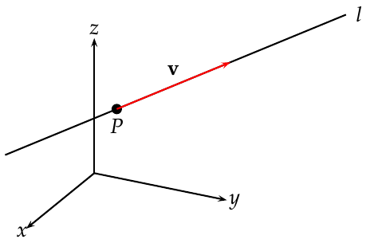

Geometría Analítica Escalares y vectores Escalares Algunos fenómenos de la naturaleza pueden describirse mediante un número referido a una unidad de medida. Definición - Escalar. Un escalar es un número que sirve para expresar una magnitud sin dirección. Ejemplo. La estatura o el peso de una persona, la temperatura de un gas o el tiempo que tarda un móvil en recorrer una distancia. Sin embargo, existen otros fenómenos que no pueden describirse adecuadamente mediante un escalar. Si, por ejemplo, un navegante quiere poner rumbo a puerto y sólo conoce de la intensidad del viento, no sabrá qué dirección tomar. La descripción del viento requiere dos elementos, su intensidad y su dirección. Vectores Definición - Vector. Un vector es un número que sirve para expresar una magnitud y tiene asociada una dirección y un sentido. Ejemplo La velocidad de un móvil o la fuerza que se aplica sobre un objeto. Geométricamente, un vector se representa mediante un segmento orientado, es decir, una flecha. Representación de un vector Un segmento orientado puede ubicarse en diferentes lugares dentro de un espacio cartesiano. Sin embargo, con independencia de donde esté situado, si la longitud y la dirección no varían, dicho segmento representará siempre el mismo vector. Esto permite representar todos los vectores con un mismo origen, el origen en sistema de coordenadas cartesianas. Así, un vector queda determinado por las coordenadas de su extremo final en cualquier espacio euclideo. Vector a partir de dos puntos Dados dos puntos $P$ y $Q$ de un espacio cartesiano, el vector con origen en $P$ y destino en $Q$ tiene coordenadas $\vec{PQ}=Q-P$. Sean los puntos $P=(2,1)$ y $Q=(3,4)$ del plano real $\mathbb{R}^2$, entonces $$\vec{PQ} = Q-P = (3,4)-(2,1) = (3-2,4-1) = (1,3).$$  Módulo de un vector Definición - Módulo de un vector. Dado un vector $\mathbf{v}=(v_1,\cdots,v_n)$ de $\mathbb{R}^n$, se define el módulo de $\mathbf{v}$ como $$\lvert \mathbf{v} \rvert = \sqrt{v_1^2+ \cdots + v_n^2}.$$ El módulo de un vector coincide con la longitud del segmento que representa al vector. Ejemplo. Sea $\mathbf{u}=(3,4)$ un vector en $\mathbb{R}^2$, entonces $$\lvert \mathbf{u} \rvert = \sqrt{3^2+4^2} = \sqrt{25} = 5.$$ Sea $\lvert \mathbf{v}\rvert =(4,7,4)$ un vector en $\mathbb{R}^3$, entonces $$\lvert \mathbf{v} \vert = \sqrt{4^2+7^2+4^2} = \sqrt{81} = 9.$$ Vectores unitarios Definición - Vector unitario. Se dice que un vector $\mathbf{v}$ de $\mathbb{R}^n$ es unitario si su módulo es 1, es decir $\lvert \mathbf{v}\rvert=1$. Especial atención merecen los vectores unitarios que siguen la dirección de los ejes de coordenadas, estos vectores se llaman vectores coordenados. En $\mathbb{R}^2$ los vectores coordenados son $$\mathbf{i}=(1,0)\mbox{ y }\mathbf{j}=(0,1)$$  En $\mathbb{R}^3$ los vectores coordenados son $$\mathbf{i}=(1,0,0)\mbox{, }\mathbf{j}=(0,1,0) \mbox{ y } \mathbf{k}=(0,0,1)$$  Suma de vectores Definición - Suma de vectores. Dados dos vectores $\mathbf{u}=(u_1,\cdots,u_n)$ y $\mathbf{v}=(v_1,\cdots,v_n)$ de $\mathbb{R}^n$, se define la suma de $\mathbf{u}$ y $\mathbf{v}$ como $$\mathbf{u}+\mathbf{v} = (u_1+v_1,\ldots, u_n+v_n).$$ Ejemplo. Sean $\mathbf{u}=(3,1)$ y $\mathbf{v}=(2,3)$ dos vectores en $\mathbb{R}^2$, entonces $$\mathbf{u}+\mathbf{v} = (3+2,1+3) = (5,4).$$ Producto de un vector por un escalar Definición - Producto de un vector por un escalar. Dado un vector $\mathbf{v}=(v_1,\cdots,v_n)$ de $\mathbb{R}^n$, y un escalar $a\in \mathbb{R}$, se define el producto de $a$ por $\mathbf{v}$ como $$a\mathbf{v} = (av_1,\ldots, av_n).$$ Ejemplo. Sean el vector $\mathbf{v}=(2,1)$ en $\mathbb{R}^2$ y el escalar $a=2$, entonces $$a\mathbf{v} = 2(2,1) = (4,2).$$ Expresión de un vector como combinación lineal de los vectores coordenados La suma de vectores y el producto de un vector por un escalar permite expresar cualquier vector como una combinación lineal de los vectores coordenados. En el caso del espacio real $\mathbb{R}^3$, cualquier vector $\mathbf{v}=(v_1,v_2,v_3)$ puede expresarse como $$\mathbf{v}=(v_1,v_2,v_3) = v_1\mathbf{i}+v_2\mathbf{j}+v_3\mathbf{k}.$$  Producto escalar Definición - Producto escalar. Dados dos vectores $\mathbf{u}=(u_1,\cdots,u_n)$ y $\mathbf{v}=(v_1,\cdots,v_n)$ de $\mathbb{R}^n$, se define el producto escalar de $\mathbf{u}$ y $\mathbf{v}$ como $$\mathbf{u}\cdot \mathbf{v} = u_1v_1 + \cdots + u_nv_n.$$ Ejemplo. Sean $\mathbf{u}=(3,1)$ y $\mathbf{v}=(2,3)$ dos vectores en $\mathbb{R}^2$, entonces $$\mathbf{u}\cdot\mathbf{v} = 3\cdot 2 +1\cdot 3 = 9.$$ Teorema - Producto escalar. Dados dos vectores $\mathbf{u}$ y $\mathbf{v}$ de $\mathbb{R}^n$, se cumple que $$\mathbf{u}\cdot\mathbf{v} = \lvert \mathbf{u}\rvert \lvert\mathbf{v}\rvert \cos\alpha$$ donde $\alpha$ es el ángulo que forman los vectores. Vectores paralelos Definición - Vectores paralelos. Dos vectores $\mathbf{u}$ y $\mathbf{v}$ son paralelos si existe un valor $a\in\mathbb{R}$ tal que $$\mathbf{u} = a\mathbf{v}.$$ Ejemplo. Los vectores $\mathbf{u}=(-4,2)$ y $\mathbf{v}=(2,-1)$ en $\mathbb{R}^2$ son paralelos, ya que $$\mathbf{v}= (-4,2) = -2(2,-1) = -2\mathbf{v}.$$ Vectores ortogonales y ortonormales Definición - Vectores ortogonales y ortonormales. Dos vectores $\mathbf{u}$ y $\mathbf{v}$ son ortogonales si su producto escalar es nulo $$\mathbf{u}\cdot \mathbf{v} = 0.$$ Si además el módulo de ambos vectores es la unidad $\lvert\mathbf{u}\rvert=\lvert\mathbf{v}\rvert=1$, entonces se dice que son ortonormales. Los vectores ortogonales son perpendiculares entre sí, es decir, forman un ángulo de $90^\circ$. Ejemplo. Los vectores $\mathbf{u}=(2,1)$ y $\mathbf{v}=(-2,4)$ en $\mathbb{R}^2$ son ortogonales, ya que $$\mathbf{u}\mathbf{v} = 2\cdot -2 +1\cdot 4 = 0,$$ pero no son ortonormales ya que $\lvert\mathbf{u}\rvert = \sqrt{2^2+1^2} \neq 1$ y $\lvert \mathbf{v}\rvert = \sqrt{-2^2+4^2} \neq 1$. Los vectores $\mathbf{i}=(1,0)$ y $\mathbf{j}=(0,1)$ en $\mathbb{R}^2$ son ortonormales, ya que $$\mathbf{i}\mathbf{j} = 1\cdot 0 +0\cdot 1 = 0, \quad \lvert\mathbf{i}\rvert = \sqrt{1^2+0^2} = 1, \quad \lvert \mathbf j\rvert = \sqrt{0^2+1^2} = 1.$$ Rectas Ecuación vectorial de la recta Definición - Ecuación vectorial de la recta. Sea $l$ una recta del espacio $\mathbb{R}^n$ y sean $P=(p_1,\ldots,p_n)$ un punto cualquiera de la recta y $\mathbf{v}=(v_1,\ldots,v_n)$ un vector cualquiera con la misma dirección que la recta. La ecuación $$l: X= P + t\mathbf{v} = (p_1,\ldots,p_n)+t(v_1,\ldots,v_n) = (p_1+tv_1,\ldots,p_n+tv_n).$$ parametriza a $l$ en función de $t\in \mathbb{R}$, y se conoce como ecuación vectorial de la recta. Ejemplo. Considérese la recta del espacio real $\mathbb{R}^3$ que aparece en la gráfica. Un punto de la recta es $P=(1,1,2)$ y un vector director es $\mathbf{v}=(-1,2,2)$, luego su ecuación vectorial es $$l: X= P + t\mathbf{v} = (1,1,2)+t(-1,2,1)=(1-t,1+2t,2+t)\quad t\in\mathbb{R}.$$  Ecuaciones paramétricas y cartesianas de la recta De la ecuación vectorial de una recta $l: X=P + t\mathbf{v}=(p_1+tv_1,\ldots,p_n+tv_n)$ se obtienen fácilmente las coordenadas de los puntos que forman parte de la recta mediante $n$ ecuaciones paramétricas: $$x_1(t)=p_1+tv_1, \ldots, x_n(t)=p_n+tv_n$$ donde, si $\mathbf{v}$ es un vector cuyas coordenadas son no nulas ($v_i\neq 0$ $\forall i$), se puede despejar el parámetro $t$ en cada una de ellas e igualarlas, $$\frac{x_1-p_1}{v_1}=\cdots = \frac{x_n-p_n}{v_n}$$ Ejemplo. Dada la ecuación vectorial de la recta $l: X=(1,1,2)+t(-1,2,1) =(1-t,1+2t,2+t)$ en el espacio real $\mathbb{R^3}$, sus ecuaciones paramétricas son $$x(t) = 1-t, \quad y(t)=1+2t, \quad z(t)=2+t,$$ y sus ecuaciones cartesianas son $$\frac{x-1}{-1}=\frac{y-1}{2}=\frac{z-2}{1}$$ Ecuación punto-pendiente de una recta en el plano En el caso particular del plano cartesiano $\mathbb{R^2}$, si se tiene una recta con ecuación vectorial $$l: X=P+t\mathbf{v}=(x_0,y_0)+t(a,b) = (x_0+ta,y_0+tb),$$ sus ecuaciones paramétricas son $$x(t)=x_0+ta,\quad y(t)=y_0+tb$$ y sus ecuación cartesiana es $$\frac{x-x_0}{a} = \frac{y-y_0}{b}.$$ A partir de aquí, pasando $b$ multiplicando al otro lado de la ecuación, se obtiene $$y-y_0 = \frac{b}{a}(x-x_0) \mbox{ o bien } y-y_0+m(x-x_0),$$ llamando $m=b/a$. Esta ecuación se conoce como ecuación en la forma punto-pendiente. Ejemplo interactivo Pendiente de una recta en el plano Definición - Pendiente de una recta. Dada una recta $l: X=P+t\mathbf{v}$ en el plano real $\mathbb{R}^2$, con vector director $\mathbf{v}=(a,b)$, se define la pendiente de $l$ como $b/a$. Ejemplo interactivo Recordar que dados dos puntos $Q=(x_1,y_1)$ y $Q=(x_2,y_2)$ de la recta $l$, se puede tomar como vector director el vector que los une, que tiene coordenadas $\vec{PQ}=Q-P=(x_2-x_1,y_2-y_1)$, de manera que la pendiente de $l$ será $\dfrac{y_2-y_1}{x_2-x_1}$, es decir, el cociente entre lo que cambia la coordenada $y$ y lo que cambia la coordenada $x$. Planos Ecuación vectorial del plano en el espacio real Para llegar a la ecuación de un plano en el espacio real $\mathbb{R}^3$ se puede partir de un punto del plano $P=(x_0,y_0,z_0)$ y de un vector perpendicular al plano $\mathbf{v}=(a,b,c)$. Entonces, para cualquier punto del plano $Q=(x,y,z)$ se cumple que el vector $\vec{PQ} = (x-x_0,y-y_0,z-z_0)$ es ortogonal a $\mathbf{v}$, por lo que su producto escalar se anulará. Definición - Ecuación vectorial de un plano en el espacio. Dado un punto $P=(v_0,y_0,z_0)$ y un vector $\mathbf{v}=(a,b,c)$ en el espacio real $\mathbb{R}^3$, la ecuación vectorial del plano que pasa por $P$ perpendicular a $\mathbf{v}=(a,b,c)$ es $$\vec{PQ}\cdot\mathbf{v} = (x-x_0,y-y_0,z-z_0)(a,b,c) = a(x-x_0)+b(y-y_0)+c(z-z_0) = 0.$$ Ecuación escalar de un plano en el espacio De la ecuación vectorial del plano se obtiene $$a(x-x_0)+b(y-y_0)+c(z-z_0) = 0 \Leftrightarrow ax+by+cz=ax_0+by_0+cz_0,$$ que, renombrando $d=ax_0+by_0+cz_0$, puede reescribirse como $$ax+by+cz=d,$$ y se conoce como ecuación escalar del plano. Example. Dado el punto $P=(2,1,1)$ y el vector $\mathbf{v}=(2,1,2)$, la ecuación vectorial del plano qu pasa por $P$ y es ortogonal a $\mathbf{v}$ es $$(x-2,y-1,z-1)(2,1,2)=2(x-2)+(y-1)+2(z-1)=0,$$ y su ecuación escalar es $$2x+y+2z=7.$$ Vector Recta Plano Siguiente Funciones elementales